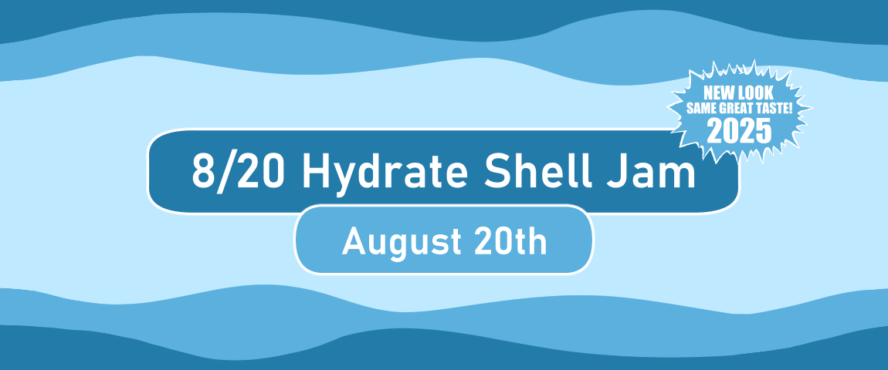

8/20 Hydrate Shell Jam 2025 rules
Banner art by Zdzisiu.
What is 8/20 Hydrate Shell Jam?
Back in 2020 I created Hydrate, a simple drink reminder ghost, as a collaboration with Zdzisiu on August 20th. I did this to celebrate the (fictional) holiday "Hydrate Day". The inspiration comes from this video. (820 can be pronounced similarly to "H2O".)
Several people made shells for this ghost. The shells can be as simple as a single drawing, and people very quickly started getting creative with what was considered a "drinking vessel". It's turned into a silly and fun creative exercise!
8/20 Hydrate Shell Jam is an event I hold yearly that gives participants 24 hours to create a brand new shell for Hydrate. It celebrates both the anniversary of the ghost, and Hydrate Day!
Timeframe
This event will take place on 8/20 (August 20th) 2025 from 12:00AM EDT to 11:59 EDT.
Countdown timer for the start of the event.
Countdown timer for the end of the event.
Rules
Create a brand new shell for Hydrate. You can create a shell from scratch, or use this Hydrate Shell Template I made as a base.
Shells can be as simple or complex as you want. A shell that is a static drawing is a fine submission!
Shells cannot contain sexual elements or nudity (artistic nudity, such as statues, is permitted if genitalia and nipples are not shown). Mild gore is permissible.
Shells cannot contain elements created with generative AI.
To be considered a "valid" Hydrate shell, it must be something that can hold liquid, or be liquid itself. You can get creative with this! Cups, bottles, bowls, a shower head, a lake, a fire hydrant??? Have fun with it!
Submissions cannot use direct download links, such as Dropbox or Mediafire. Please use a publicly accessible link, such as a personal website, a post on social media, or a Github release!
Multiple submissions and teaming up are welcome!
Submission form
Submissions this year will be handled via Google Forms. By submitting a shell you are agreeing to have it displayed publicly on the event's results page and banner.
Please follow the instructions on the form carefully, and make sure to include your name and what link you want to be credited by. If you have any questions about submitting, please ask me!